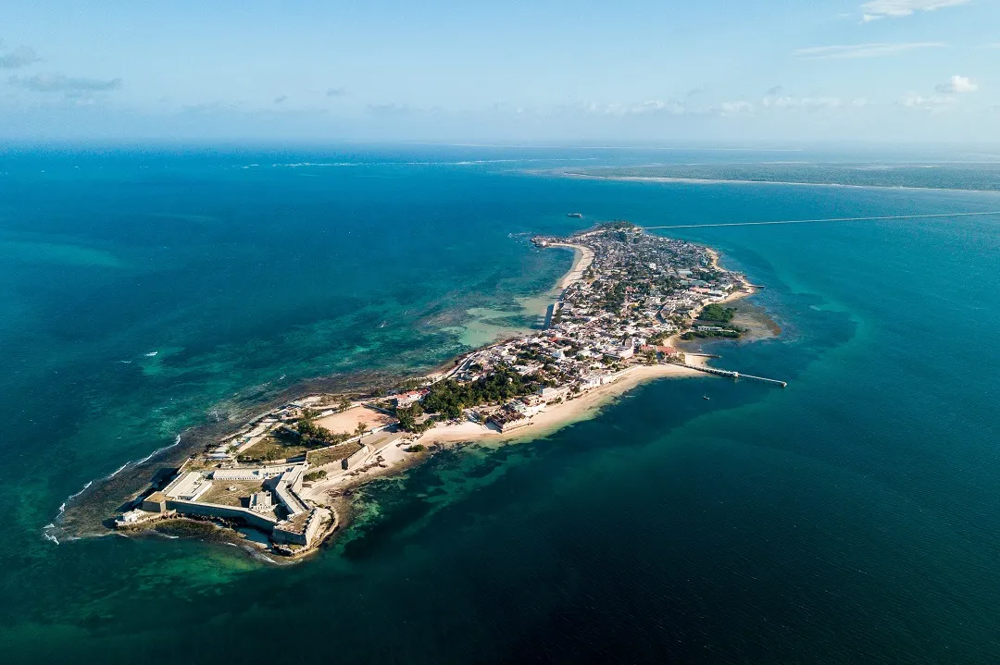
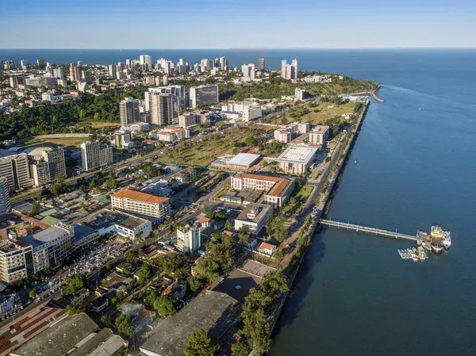
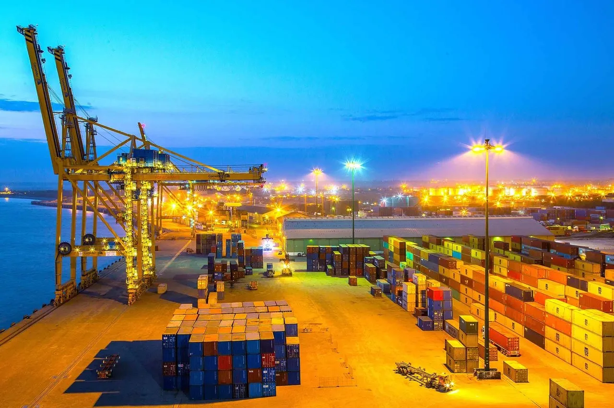

História de Moçambique
A história de Moçambique é marcada por reinos africanos, rotas comerciais árabes, colonização portuguesa e uma luta pela independência que moldou a nação atual.
Moçambique foi habitado desde a Idade da Pedra por povos caçadores-coletores. Entre os séculos I e V, povos bantu migraram para a região, estabelecendo reinos importantes como o Reino de Monomotapa, conhecido por suas minas de ouro e comércio com a costa.
Ilha de Moçambique, primeiro assentamento português e Patrimônio Mundial da UNESCO
No século XV, os portugueses chegaram à região, estabelecendo postos comerciais e rotas de escravos. Moçambique tornou-se colônia portuguesa por quase 500 anos, até a independência em 1975 após uma guerra de libertação liderada pela FRELIMO.
Você sabia?
Moçambique foi um importante centro do comércio de escravos no Oceano Índico, com escravos sendo enviados principalmente para as plantações nas ilhas francesas e brasileiras.
Apos a Independencia
No dia 25 de junho de 1975, Moçambique tornou-se finalmente independente de Portugal. Foi um momento de muita alegria e esperança. Samora Machel, o primeiro presidente, assumiu o comando com um sonho: construir um país justo, livre e igual para todos. Mas logo a seguir à independência, vieram tempos difíceis. O país ainda era muito pobre, havia poucas escolas, hospitais e estradas, e quase todos os técnicos e administradores portugueses tinham ido embora. O novo governo começou a organizar tudo do zero, com um modelo socialista, onde tudo era do Estado: terra, empresas, escolas e até os transportes.
Uma guerra entre irmãos
Pouco tempo depois, começou uma guerra civil. De um lado estava o governo da FRELIMO, do outro a RENAMO, um grupo que dizia lutar por liberdade, mas que acabou envolvido em muita destruição. A guerra durou 16 anos, e deixou marcas profundas: mais de um milhão de pessoas morreram, muitas aldeias foram destruídas, e milhares de moçambicanos fugiram para países vizinhos. A paz só chegou em 1992, com a ajuda da Igreja Católica e mediadores internacionais. Foi assinado o Acordo Geral de Paz, e com isso o país começou um novo capítulo.
Primeiras Eleições
Depois da guerra, Moçambique começou a mudar. Chegaram as primeiras eleições livres em 1994, e o país adotou um sistema multipartidário. Começaram também as reformas económicas: muitas empresas foram privatizadas, abriram-se mais escolas e hospitais, e investidores estrangeiros começaram a mostrar interesse no país. Apesar da paz, os desafios continuavam. A pobreza era alta, o desemprego crescia, e o país ainda dependia muito da ajuda internacional
Crescimento com desigualdades
Nos anos 2000, Moçambique viveu um tempo de crescimento económico. Projetos como a fábrica de alumínio Mozal, o gás natural em Inhambane, e o turismo em lugares como Bazaruto e Gorongosa deram nova vida ao país. As cidades começaram a crescer, mais estradas foram construídas, e muitos moçambicanos começaram a estudar e sonhar com uma vida melhor. Mas nem todos sentiram esse progresso. Nas zonas rurais, a pobreza continuava, e muitos jovens ainda não tinham emprego ou oportunidades.
Escândalos e violência
A partir de 2015, Moçambique enfrentou novos problemas. O escândalo das dívidas ocultas abalou a economia. Foram mais de 2 mil milhões de dólares emprestados sem autorização, e quando tudo veio a público, muitos doadores internacionais cortaram o apoio. O metical perdeu valor, os preços subiram e o povo sofreu.
Enquanto no centro do país tentávamos consolidar a paz com a RENAMO, no norte nascia uma nova ameaça: a insurgência armada em Cabo Delgado. Em 2017, começaram os ataques — primeiro a aldeias, depois a distritos inteiros. Grupos extremistas, alegadamente ligados ao Estado Islâmico, espalharam o terror: queimaram casas, decapitaram civis, forçaram famílias inteiras a fugir. Milhares de vidas foram perdidas. Centenas de milhares fugiram para acampamentos improvisados, sem comida, sem abrigo, sem esperança. Mas mesmo assim, em meio ao medo, muitos continuaram a resistir. Organizações locais ajudaram, jornalistas contaram a verdade, e vozes jovens ergueram-se para exigir segurança e dignidade.
Ciclones, pandemias e resiliência
Em 2019, a natureza também nos pôs à prova. O ciclone Idai, um dos mais violentos do século, destruiu a cidade da Beira e outras regiões. Logo a seguir veio o ciclone Kenneth. Casas desabaram, escolas sumiram, hospitais inundaram. Mas também vimos algo incrível: o povo ajudando o povo, de mãos dadas, com solidariedade e fé. Depois, em 2020, chegou o COVID-19, que virou o mundo do avesso. As ruas ficaram vazias, as escolas fecharam, o trabalho parou. Mas os moçambicanos encontraram formas de sobreviver, vendendo online, estudando por rádio ou WhatsApp, adaptando-se com criatividade.
Fraude Eleitoral
As eleições autárquicas de 2023 em Moçambique foram um momento importante para o país, pois permitiram que o povo escolhesse os líderes das suas cidades e comunidades. Muitas pessoas participaram, principalmente jovens, que votaram pela primeira vez com esperança de ver mudanças positivas no seu dia a dia. Os resultados mostraram uma vitória ampla da FRELIMO, que ganhou a maioria dos municípios, inclusive em regiões onde a oposição, especialmente a RENAMO, tinha uma forte base de apoio. Essa situação gerou desconfiança e acusações de fraude por parte da oposição e de vários cidadãos. As irregularidades denunciadas incluíam votos alterados, contagens questionáveis e manipulação das urnas. Isso provocou protestos pacíficos em várias cidades, como Maputo, Nampula e Beira, onde a população exigia que o seu voto fosse respeitado. Infelizmente, em alguns desses protestos, a polícia reprimiu os manifestantes com força, causando feridos e, em casos tristes, a morte de algumas pessoas. Isso gerou um clima de tensão política e social, aumentando a desconfiança entre os cidadãos e as instituições. O Tribunal Constitucional analisou os recursos apresentados e manteve os resultados, o que deixou muitos desanimados, mas também reforçou a vontade popular de lutar por eleições mais transparentes e justas. Em 2024, realizaram-se as eleições gerais, onde foram eleitos o novo presidente, os deputados da Assembleia e os governadores provinciais. O então presidente Filipe Nyusi, que cumpria o seu segundo mandato, não concorreu novamente, abrindo caminho para novas lideranças. Apesar dos desafios e das tensões vividas, estas eleições mostraram a força da democracia moçambicana e a determinação do povo em participar e exigir respeito pelo seu voto.
Marcos Históricos
Geografia de Moçambique
Com uma costa banhada pelo Oceano Índico e paisagens que variam de savanas a florestas tropicais, Moçambique possui uma geografia diversificada e rica em recursos naturais.
Moçambique está localizado no sudeste da África, fazendo fronteira com Tanzânia, Malawi, Zâmbia, Zimbábue, África do Sul, Essuatíni e o Oceano Índico. O país possui uma extensa costa de cerca de 2.500 km, com praias de areia branca e recifes de coral.
Baía de Maputo, onde o rio Maputo encontra o Oceano Índico
Destaque Geográfico
O Monte Binga, com 2.436 metros, é o ponto mais alto de Moçambique, localizado na província de Manica perto da fronteira com o Zimbábue.
Principais características geográficas:
- Planícies costeiras (ocupam cerca de 44% do território)
- Planaltos e montanhas (interior do país)
- Grandes rios como Zambeze, Limpopo e Save
- Arquipélagos como Bazaruto e Quirimbas
Teste Seu Conhecimento
Qual é o principal rio que atravessa Moçambique?
Economia de Moçambique
Com recursos naturais abundantes e uma posição estratégica na costa oriental da África, Moçambique tem uma economia em crescimento com grande potencial, embora enfrente desafios significativos.
Panorama Econômico
Desde o fim da guerra civil em 1992, Moçambique registrou um crescimento econômico médio de cerca de 7% ao ano até 2015, tornando-se uma das economias que mais cresciam em África. No entanto, desde 2016, o crescimento desacelerou para cerca de 3-4% ao ano devido à descoberta de dívidas ocultas, choques climáticos e conflitos no norte do país.
Porto da Beira, importante centro de comércio regional e corredor para países sem litoral
Dado Econômico
Moçambique é o terceiro maior produtor de castanha de caju do mundo, depois da Índia e da Costa do Marfim, e o sector agrícola emprega cerca de 80% da força de trabalho.
Principais Setores Econômicos
- Agricultura (contribui com cerca de 25% do PIB): Castanha de caju, algodão, açúcar, tabaco, coco e mandioca. O país tem potencial para se tornar o "celeiro" da África Austral.
- Mineração e Recursos Naturais:
- Carvão mineral (Bacia do Rio Moatize - uma das maiores reservas do mundo)
- Gás natural (Bacia do Rovuma - 4ª maior reserva de gás natural liquefeito do mundo)
- Pedras preciosas (rubis, safiras, turmalinas)
- Titânio e grafite
- Energia: Moçambique exporta energia elétrica para a África do Sul e outros países vizinhos através da Hidroelétrica de Cahora Bassa, uma das maiores da África.
- Pesca e Aquicultura: Com mais de 2.500 km de costa, possui grande potencial na pesca de camarão e outros frutos do mar.
- Turismo: Em crescimento, destacando-se as praias do Arquipélago de Bazaruto, a Ilha de Moçambique (Patrimônio Mundial da UNESCO) e os parques nacionais.
- Indústria: Ainda incipiente, concentra-se em processamento agrícola, cimento e bebidas.
Comércio e Investimento
Moçambique tem atraído investimentos estrangeiros significativos, especialmente nos megaprojetos de gás natural e mineração. Os principais parceiros comerciais são:
- África do Sul
- China
- Índia
- Portugal
- Holanda
Desafios Econômicos
Moçambique enfrenta vários desafios, incluindo infraestrutura deficiente, corrupção, dependência de commodities, vulnerabilidade a desastres climáticos e conflitos armados no norte do país.
Perspectivas Futuras
Com o desenvolvimento dos megaprojetos de gás natural na Bacia do Rovuma (estimados em mais de 50 bilhões de dólares em investimentos), Moçambique poderá se tornar um dos maiores exportadores de GNL do mundo até 2030, o que poderia transformar radicalmente sua economia.
O governo tem implementado reformas para melhorar o ambiente de negócios, diversificar a economia e promover o desenvolvimento de pequenas e médias empresas.

Plataforma de produção de gás natural liquefeito no projeto Coral Sul, Rovuma
Fauna de Moçambique
Moçambique, com seus diversos ecossistemas que incluem savanas, florestas, mangais e recifes de coral, abriga uma das faunas mais ricas e diversas da África Austral.
Mamíferos Terrestres
Moçambique possui todos os membros dos "Big Five" africanos (leão, leopardo, elefante, búfalo e rinoceronte), embora algumas populações tenham sido drasticamente reduzidas durante a guerra civil. O país está trabalhando ativamente na recuperação dessas populações:
- Elefantes: Cerca de 10.000 indivíduos, com populações significativas no Parque Nacional da Gorongosa e na Reserva do Niassa
- Leões: Estimados em 1.000-1.500 indivíduos, principalmente no corredor de conservação do Grande Limpopo
- Rinocerontes: Reintroduzidos recentemente após serem praticamente extintos no país
- Mabecos (cães selvagens africanos): Uma das populações mais importantes da região
- Hipopótamos e crocodilos: Abundantes nos principais rios como o Zambeze e o Limpopo
Parque Nacional da Gorongosa, um dos mais importantes do país e exemplo de recuperação ecológica
Curiosidade Animal
Moçambique possui uma subespécie única de elefante adaptada às florestas, menor em tamanho que os elefantes da savana, encontrada principalmente no norte do país.
Vida Marinha
A costa de 2.500 km de Moçambique abriga ecossistemas marinhos excepcionais:
- Dugongos: A população do Arquipélago de Bazaruto é uma das últimas viáveis na África Oriental
- Tartarugas marinhas: Cinco das sete espécies mundiais desovam nas praias moçambicanas
- Tubarões-baleia: Frequentemente avistados na Ilha do Ibo e no Arquipélago das Quirimbas
- Baleias jubarte: Visitam as águas moçambicanas entre julho e novembro para se reproduzir
- Recifes de coral: Abrigam mais de 1.200 espécies de peixes tropicais
Aves
Com mais de 700 espécies registradas, Moçambique é um paraíso para observadores de aves:
- Aves endêmicas: Como o tchagra-de-sobral (uma espécie encontrada apenas no centro de Moçambique)
- Aves migratórias: Recebe anualmente aves da Europa e Ásia
- Áreas importantes: Delta do Zambeze, Lago Niassa e as florestas costeiras
Espécies Ameaçadas
Moçambique tem 98 espécies na Lista Vermelha da IUCN, incluindo o rinoceronte-negro, o dugongo e o pangolim, que enfrentam ameaças como caça furtiva e perda de habitat.
Principais Áreas de Conservação
- Parque Nacional da Gorongosa: Considerado um dos maiores sucessos de recuperação ecológica do mundo
- Reserva Nacional do Niassa: 42.000 km² de área selvagem no norte do país
- Parque Nacional do Limpopo: Parte do Parque Transfronteiriço do Grande Limpopo (Moçambique, África do Sul e Zimbabwe)
- Arquipélago de Bazaruto: Parque Nacional Marinho que protege dugongos e recifes de coral
- Reserva Especial de Maputo: Protege ecossistemas costeiros próximos à capital
Vida Selvagem em Destaque


Esforços de Conservação
Moçambique tem implementado programas inovadores de conservação, incluindo:
- Projetos comunitários de gestão de recursos naturais
- Reintrodução de espécies extintas localmente
- Combate à caça furtiva com unidades especializadas
- Parcerias internacionais para proteção marinha
Flora de Moçambique
Com uma extraordinária diversidade fitogeográfica que abrange desde florestas tropicais até savanas áridas, Moçambique é um verdadeiro tesouro botânico da África Austral, abrigando mais de 5.600 espécies de plantas vasculares.
Biomas Vegetais Principais
A vegetação moçambicana distribui-se em cinco grandes biomas, cada um com características únicas:
Florestas de Miombo
Cobrem cerca de 50% do território, dominadas por árvores do gênero Brachystegia, Julbernardia e Isoberlinia. Estas florestas são importantes para a conservação do solo e abrigam espécies como o pau-preto (Dalbergia melanoxylon).
Savanas
Divididas em savanas arbóreas (com acácias e embondeiros) e herbáceas. Destacam-se as palmeiras Hyphaene coriacea e a árvore-salsicha (Kigelia africana), com seus frutos peculiares.
Mangais
Moçambique possui a terceira maior área de mangal da África, com 8 espécies diferentes, incluindo Rhizophora mucronata. Estendem-se por 3.000 km² ao longo da costa, crucial para a proteção marinha.
Florestas de Montanha
Nas serras de Chimanimani, Gorongosa e Namúli encontram-se espécies endêmicas como a proteá (Protea spp.) e orquídeas raras, além de antigas florestas de cedro (Widdringtonia whytei).
Extensos mangais ao longo da costa, ecossistemas vitais para a reprodução de espécies marinhas
Símbolos Vegetais
A marula (Sclerocarya birrea) e o embondeiro (Adansonia digitata) são árvores icônicas. O país possui alguns dos maiores baobás da África, incluindo o famoso "Grande Baobá de Quissico" com mais de 25m de circunferência.
Espécies Notáveis
Baobá (Adansonia digitata)
Árvores milenares que podem armazenar até 120.000 litros de água. Alguns exemplares nas Quirimbas têm mais de 800 anos.
Marula (Sclerocarya birrea)
Seus frutos são ricos em vitamina C e usados para fazer o tradicional licor "Amarula". As sementes produzem óleos cosméticos.
Mangal (Rhizophora spp.)
Ecossistemas costeiros que protegem contra erosão e servem de berçário para vida marinha, cobrindo 3.000 km² de costa.
Plantas Endêmicas e Ameaçadas
Moçambique possui cerca de 250 espécies endêmicas, principalmente nas regiões montanhosas. Entre as ameaçadas destacam-se:
- Pau-preto (Dalbergia melanoxylon) - Explorado por sua madeira valiosa
- Cedro-de-Moçambique (Widdringtonia whytei) - Endêmico das montanhas
- Orquídea de Chimanimani (Disa celata) - Rara e localizada
- Cycas inhamiana - Fóssil vivo ameaçado por colecionadores
Conservação da Flora
Moçambique estabeleceu várias áreas protegidas para preservar sua biodiversidade vegetal:
- Parque Nacional de Banhine - Protege savanas úmidas e espécies raras
- Reserva Florestal de Moribane - Conserva florestas de montanha
- Parque Nacional das Quirimbas - Protege vegetação costeira e insular
- Jardim Botânico de Maputo - Mantém coleções de plantas nativas
Usos Tradicionais
A flora moçambicana tem profunda importância cultural e econômica:
Medicinais
Mais de 500 espécies são usadas na medicina tradicional, como a raiz de Mondia whitei para problemas digestivos.
Alimentares
Frutas como a maçanha (Strychnos spinosa) e folhas de mandioca são alimentos básicos.
Materiais
Bambu e folhas de palmeira são usados para construção, enquanto o sisal fornece fibras.
A diversidade vegetal de Moçambique enfrenta desafios como desmatamento e mudanças climáticas, mas iniciativas de conservação e uso sustentável buscam proteger este patrimônio natural para futuras gerações.
Cultura Moçambicana
A cultura moçambicana é uma fusão vibrante de tradições africanas, influências árabes e portuguesas, expressa na música, dança, arte e culinária.
Moçambique tem uma rica tradição cultural com mais de 40 grupos étnicos, cada um com suas próprias línguas e costumes. O português é a língua oficial, unificando o país, enquanto línguas como macua, tsonga e sena são amplamente faladas.

Dança tradicional Timbele, expressão cultural do norte de Moçambique
Patrimônio Cultural
A marrabenta, estilo musical originário de Moçambique, combina ritmos tradicionais com influências portuguesas e é considerada a música nacional.
A culinária moçambicana é famosa por seus sabores intensos:
- Piri-piri (molho picante de pimenta malagueta)
- Matapa (prato feito com folhas de mandioca, camarão e amendoim)
- Frango à Zambeziana (frango grelhado com piri-piri e limão)
- Camaro (camarão grelhado ou em molho de coco)
Arquitetura Tradicional

Casas Maconde
Estruturas de barro com telhados de palha e portas esculpidas, típicas do norte.

Influência Swahili
Na Ilha de Moçambique, casas brancas com varandas de madeira e pátios internos.
Literatura e Contos Tradicionais

Moçambique tem uma rica tradição oral de contos sobre animais (como a lebre e a hiena) e uma literatura contemporânea premiada. Mia Couto, vencedor do Prêmio Camões, é o escritor mais conhecido internacionalmente, misturando realismo mágico com provérbios tradicionais.
Festivais Culturais

Festival de Marrabenta
Maior evento musical do país, realizado anualmente em Maputo.

Gwaza Muthini
Comemoração da resistência contra o colonialismo em Marracuene.
Cultura Urbana Contemporânea
Nas cidades, jovens criam novas formas de expressão:
- Hip-hop moçambicano (como o grupo Azagaia)
- Pintura mural em Maputo e Beira
- Moda Afro-urbana com tecidos capulana

Mais Expressões Culturais


Diversidade de Moçambique
Moçambique é um país de grande diversidade étnica, linguística e religiosa, onde tradições ancestrais convivem com influências modernas.
Com cerca de 30 milhões de habitantes... [todo o texto original preservado]

Mercado tradicional, reflexo da diversidade cultural
Curiosidade Cultural
Moçambique é um dos poucos países africanos onde o Dia dos Namorados... [texto original]
Religiões em Moçambique: [lista original mantida]
Apesar das diferenças... [parágrafo original sobre identidade nacional]
Distribuição Étnica

Mosaico Linguístico
Português
Língua oficial falada por 50% da população
Emakhuwa
Falado por 25% (principalmente no norte)
Xichangana
Língua tsonga do sul
+20 línguas bantu reconhecidas como nacionais
Celebrações da Diversidade

Rituais Nyau
Danças secretas dos Chewa com máscaras de animais

Festival da Marrabenta
Celebração do ritmo nacional em Maputo
Vestuário Tradicional

Traje feminino Macua com capulana

Vestimenta tradicional Tsonga
Comunidades no Exterior
- África do Sul: 500 mil moçambicanos
- Portugal: 30 mil imigrantes
- Brasil: Herança cultural na Bahia

Rostos da Diversidade


Turismo em Moçambique
Com praias paradisíacas, ilhas de coral, parques nacionais e cidades históricas, Moçambique é um destino turístico em ascensão.
O turismo em Moçambique tem crescido significativamente... [texto original completo preservado]

Arquipélago de Bazaruto, paraíso tropical com dunas e recifes de coral
Destaque Turístico
O arquipélago das Quirimbas, no norte... [texto original]
Principais atrações turísticas: [lista original mantida]
Turismo de Aventura

Mergulho Profundo
Explore navios naufragados da WWII e recifes virgens nas Quirimbas

Kitesurf
Praia do Tofo é top 10 mundial para kitesurf entre Junho-Outubro

Safari Walking
Safáris a pé na imaculada Reserva do Niassa (42,000 km²)
Roteiros Imperdíveis

Costa Sul (7 dias)
- Maputo (2 dias) - gastronomia e cultura
- Ponta do Ouro (2 dias) - mergulho com golfinhos
- Inhambane (3 dias) - praias de Tofo e Barra

Rota Histórica (10 dias)
- Ilha de Moçambique (3 dias) - Patrimônio UNESCO
- Nampula (2 dias) - cultura Macua
- Pemba (5 dias) - Quirimbas e mergulho
Experiências Culturais

Feira do Artesanato (Maputo)
Compre esculturas maconde e capulanas tradicionais
Festival de Marrabenta
Maior evento musical do país em Novembro

Mercado Municipal (Beira)
Arquitetura art déco e especiarias locais
Acomodações Sustentáveis

&Beyond Benguerra
Lodge de luxo em Bazaruto com projetos de conservação marinha

Quirimbas Eco-Lodge
Construído com materiais locais em Ibo Island
Rotas Gastronômicas

Costa do Sol (Maputo)
Famoso por seus camarões grelhados desde 1942

Mercado do Peixe
Peixe fresco grelhado na hora na praia
Momentos Inesquecíveis


Informações Práticas
Vistos
Obtidos na chegada para maioria das nacionalidades (US$50)
Moeda
Metical (MZN), mas USD e ZAR são aceitos em muitos lugares
Melhor Época
Abril-Outubro (estação seca com temperaturas amenas)